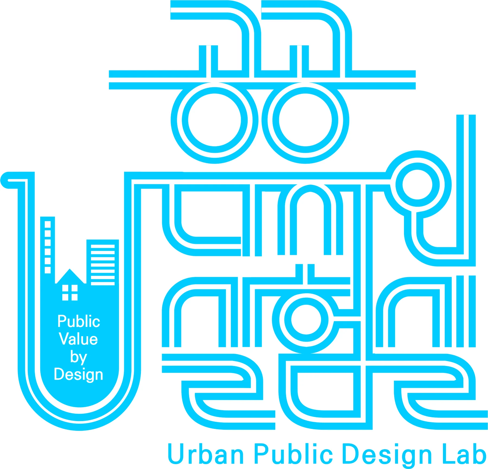
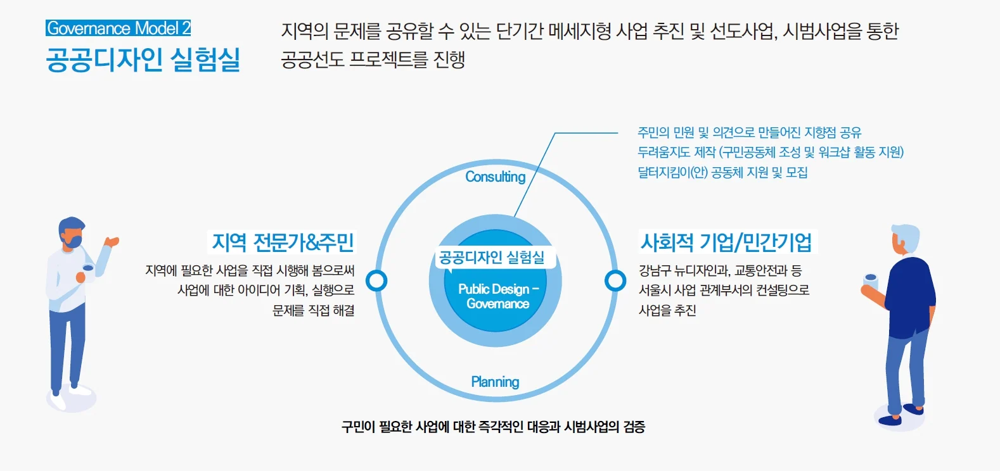
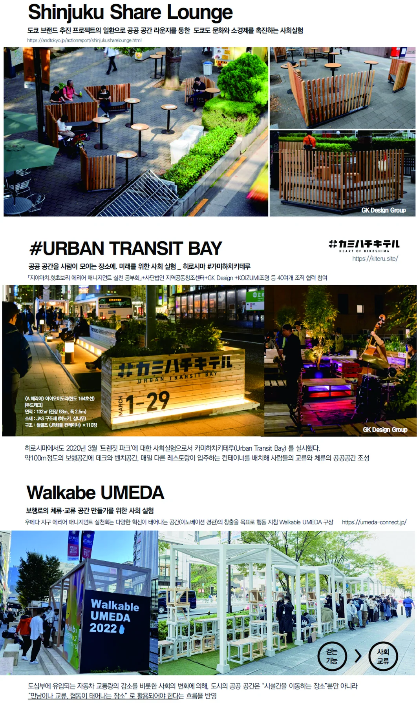
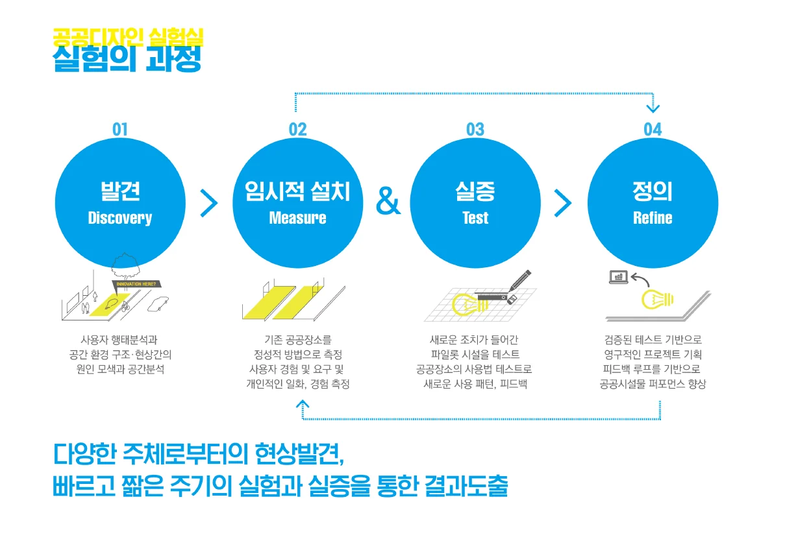

공공디자인으로 랩(Lab)하기
공공디자인으로 ‘랩(Lab)’하기.
공공디자인 실험실

“ ....‘공공디자인 실험실’ 이라는 명칭은 2019년 서울시 강남구 공공디자인 진흥계획 1차에서 계획된 강남구 공공디자인 진흥을 위한 거버넌스 모델명으로써 지역의 문제를 공유하고 단기간 협력형 시범운영 사업 추진으로 문제해결 방안, 제도화 필요성 제고를 목적으로 한다....”
공공디자인 실험실(Public Design Lab)이란.
공공디자인 실험실 개념의 등장은 한국 공공디자인 정책의 진화 과정과 밀접하게 연관된다. 초기 공공디자인이 도시 미관 개선, 시설물 정비 등 하드웨어적 측면에서 시작했다가 점차 범죄 예방, 고령화 대응, 사회적 포용 증진 등 사회 문제 해결과 시민 참여를 중시하는 방향으로 전환되었다. '공공디자인 실험실'은 이러한 변화를 반영하는 구체적인 접근법 중 하나로 볼 수 있다.
'공공디자인 실험실'이라는 명칭은 2019년에 강남구 공공디자인 진흥게획내에서 기획되었고 2022년 사회문제해결을 위한 강남구 공공디자인 실험실이라는 용역으로 최초로 사업화 되어 진행되었으며 같은해에 공공디자인 토론회에서 발제되고 논의되었으며 KCDF가 주관하는 공공디자인 페스티벌에서는 2024년부터 '공공디자인 실험실' 프로그램을 진행하며 5가지의 새로운 선도형 프로젝트를 선보였다.
이는 '공공디자인 실험실'이 완전히 새로운 개념이라기보다는, 기존에 존재하던 참여적·실험적 공공디자인 접근법을 KCDF의 역할 확대와 공공디자인 페스티벌과 같은 새로운 플랫폼을 통해 최근에 보다 체계적으로 명명하고 확산되기 위한 플랫폼의 개념으로 해석될 수 있다. 즉, 2016년 공공디자인법 제정 이후 공공디자인의 기획부터 분석, 설계, 설치, 관리까지의 전 주기적 과정이 디자인 영역으로 포함되고 사회적 역할과 방법론에 대한 고민이 깊어지면서 ‘공공디자인 실험실'이라는 프로세스와 전략이 이러한 필요와 요구를 담아내는 효과적인 방식으로 확산되고 있는 것으로 보인다.
그림 2 ‘강남구 공공디자인 진흥계획 보고서’중 공공디자인 실험실

'공공디자인 실험실(Public Design Lab)'은 공공영역에서의 실험적 접근, 시민 참여, 그리고 특정 사회 및 도시 문제 해결을 디자인적 개입을 통해 시도하는 데 중점을 둔다. 공공디자인의 이러한 접근은 단순히 미적 개선을 넘어, 공공 정책과 서비스의 혁신성, 실현성, 포용성을 높여 시민의 삶의 질을 실질적으로 향상시키는 것을 목표로 한다.
공공디자인 실험실 개념은 국제적인 디자인 및 도시 디자인 동향과 맥을 같이 한다. 사용자 중심의 혁신 플랫폼으로서 '리빙랩(Living Lab)', 저비용·단기적 개입을 통해 아이디어를 실험하는 '택티컬 어바니즘(Tactical Urbanism)', 지역의 공간을 공유하고 함께 만들어 가는 ‘플레이스 메이킹(Placemaking)’ 그리고 공공 부문에서의 사용자 경험 개선을 목표로 하는 '서비스 디자인(Service Design)' 일본 국토교통성의 새로운 정책에 대한 새로운 변혁 수단에 대한 합의 형성을 추진하는 제도인 ‘사회실험(Social Experiment)’등과 같은 새로운 방법론적 특성과 유사하다.
즉, 공공디자인 실험실은 전통적인 하향식, 전문가 중심의 공공 프로젝트 추진 방식에서 벗어나, 실제 사용자인 시민과 다양한 이해관계자가 문제 정의부터 해결책 모색, 실행 및 평가 과정에 참여하는 상향식, 수복형, 협력적 모델을 지향한다.
그림 3 일본 사회실험(Social Experiment) 프로젝트 사례

공공디자인 실험실(Public Design Lab) 특징.
공공디자인 실험실은 문제발굴과 과정 및 실현단계까지 행정과 주민의 참여를 통한 공공디자인 거버넌스 모델로 제도화 전 시범운영으로 단기적 시행 효과에 대해 즉각적인 검증이 가능하다.
기존 공공기관의 하향식 사업의 한계점을 보완하는 방식으로 일방적인 결정에 의한 사업이 아닌 수혜자의 요구 및 만족 중심의 사업을 공공가치 영역의 범위에서 규정하고, 그 사업을 역으로 공공의 이해관계자에 제안, 설득하는 방식으로, 민간+비영리 기관이 공공기관 대리 임무 수행이 아닌 시민과 함께 직접적인 제안자로 전환하여 실제 구민의 높은 유대감을 통한 문제점 해결 방안을 제안할 수 있다.
공공영역의 서비스 수혜자가 서비스 공급자로 전환되어 공공기관 외 다양한 민간 협업 방식을 통해 사업의 내용을 재정립하여 공공에 사업내용을 역제안할 수 있으며, 하향식 기존 공공디자인 사업의 한계점을 극복하고 실제 수요자의 만족도 우선의 사업을 추진할 수 있다.
그림 4 공공디자인 실험실의 프로세스

공공디자인 실험실(Public Design Lab) 모델.
공공디자인 실험실 모델은 다음과 같은 주요 특징을 갖는다.
■ 일상 공공 환경 기반 : 샘플이나 통제된 특수 환경이 아닌, 시민의 공공환경에서 문제를 정의하고 해결책을 모색한다.
■ 공동 협력 주도: 행정담당자나 시민을 서비스 공급자와 수혜자로 보지 않고, 문제 해결 및 혁신 디자인 과정의 공동 주체로 간주한다.
■ 다양한 이해관계자 참여: 공공, 민간, 시민사회, 연구기관 등 다양한 배경을 가진 이해관계자들이 협력하여 시너지를 창출한다.
■ 임시적 모델 및 테스트: 아이디어를 빠르게 모델로 구현하고 실제 환경에서 테스트하며, 실증 피드백을 통해 지속적으로 개선하는 구조를 가진다.
■ 사회 혁신 지향: 기존의 디자인 모델에서 변화된 과정적이고 협력적이며 혁신적인 모델을 통해 삶의 질 향상, 사회 문제 해결 등 공공적 가치와 사회 혁신을 위한 선도성을 중요한 목표로 삼는다.
강남구 공공디자인 실험실
<강남구 공공디자인 실험실 동영상>
“복잡하고 고착화된 문제 해결을 위한 정책적 도구로서 공공디자인의 가능성 탐구‘
강남구 공공디자인 실험실은 흡연, 쓰레기 무단 투기, 보행 안전 등 강남구의 고질적인 지역 사회 문제를 주민과 공유하고, 디자인 활동 참여 기회를 제공하여 디자인 실험적 해결책을 개발하며, 이를 통해 공동체 의식을 회복하고 '강남 스타일' 공공디자인의 가치를 확산하는 것을 목표로 하였다.
카드 뉴스 슬라이드
공공디자인 실험실 _ 공공디자인 페스티벌 2024
2024년 공공디자인 페스티벌 기간동안 지자체, 학계, 민간기업 등의 협력을 통해 공공디자인을 기반으로 한 새로운 모델의 공공전시가 진행되었다.
공공디자인 페스티벌에서 진행된 공공디자인 실험실은 다음과 같은 특징을 지닌다.
ㅇ 공공디자인 실험실은 사회문제 이슈에 대해 새로운 공공디자인을 실험적으로 제시 및 적용하여 혁신적인 공공디자인 모델을 도출하고자 하는 Testbed.
ㅇ 공공디자인 실험실은 공공가치의 향상을 목표로 다양한 사회 문제를 해결하기 위한 방안을 직접 실행하는 혁신적인 접근 방식의 공공디자인 실행방안.
ㅇ 공공디자인 실험실의 내용은 일상생활의 안전과 편의를 돕고 장애, 연령, 국적에 제한 없이 일상을 누리게 하는 공간과 시설.
ㅇ 공공디자인 실험실은 공유와 참여형의 콘텐츠로서 공공 의식 변화의 촉매로 활용하기 위해 쇼-스페이스(Show-space)의 형식으로 공유.
공공디자인 실험실 5개 모델
- 멘탈케어 공공디자인 실험실
- 모바일 퍼블릭 스페이스(Moblie Public Space) 실험실
- 사회갈등예방형 흡연공간디자인 실험실
- 느린공공공간만들기_어반 캠핑 실험실
- 현대백화점 면세점 ESG 공공디자인 실험실
슬라이드 이미지
공공디자인 페스티벌의 공공디자인 실험실을 통해 공공문제 해결을 위한 공공디자인 신모델의 확산방안 마련, 다양한 참여 주체를 통한 공공디자인의 확산, 임시적이고 실험적 실행을 통한 공공디자인의 가치를 공유할 수 있었다.
공공디자인으로 랩(Lab)하기의 가치
■혁신성 및 실험 정신 : 복잡하고 해결하기 어려운 도시 및 사회 문제에 대해 기존의 틀에서 벗어난 새로운 아이디어를 시도하고 실험할 수 있는 환경을 제공한다.
결과중심이 아닌 과정중심의 디자인을 통해 배우고 개선해나가는 과정을 장려하며, 이는 공공 부문의 혁신 역량 강화에 기여할 수 있다.
■시민 참여 증진: 시민들을 문제 해결 과정의 파트너로 참여시켜 현장의 목소리를 반영하고, 결과적으로 솔루션의 수용성과 만족도를 높일 수 있다. 참여 과정 자체가 공동체 의식을 함양하고 사회적 자본을 형성하는 데 기여할 수도 있다.
■행정정책의 수단: 공공디자인을 통해 민원을 해결하고 지역 문제를 해결하는 정책적 도구로서의 공공디자인 가능성을 인식한다.
■현장 중심 문제 해결: 실제 문제가 발생하는 현장에서 사용자와 함께 해결책을 모색함으로써 탁상공론에서 벗어나 실질적인 효과를 거둘 가능성이 높다. 특히 실험에 대한 실증기반의 검증기법은 현장 중심 실험을 효과적으로 지원하며 사업 추진의 강한 객관적 근거가 된다.
■공공 가치 추구: 단순히 미적 개선이나 기능 효율화에 머무르지 않고, 안전, 편의, 포용, 환경, 문화 향유 등 시민의 삶의 질과 직결된 사회적 공공가치를 적극적으로 추구한다.
궁극적으로 공공디자인 실험실의 성공은, 단발성 프로젝트 수행을 넘어 지속가능하고 체계적으로 평가받는 공공 정책 수단의 일부로 자리매김하는 데 달려있다. 혁신과 참여라는 핵심 가치를 유지하면서도, 기존 하향화된 사업 방식에 매몰되지 않고 실질적인 사회 변화를 이끌어내는 균형점을 찾는 것이 중요한 과제이다.
이러한 정책적 노력을 통해 공공디자인 실험실은 한국 사회가 직면한 다양한 문제들을 창의적이고 협력적으로 해결하며, 시민들의 삶의 질을 실질적으로 향상시키는 데 더욱 효과적으로 기여할 수 있을 것이다.